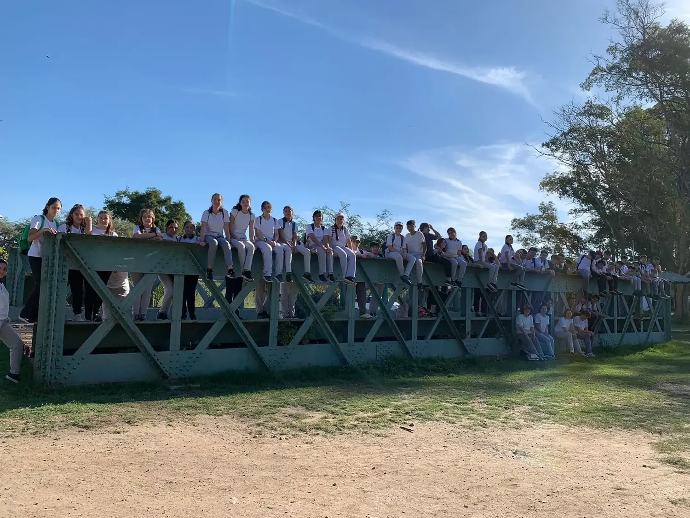
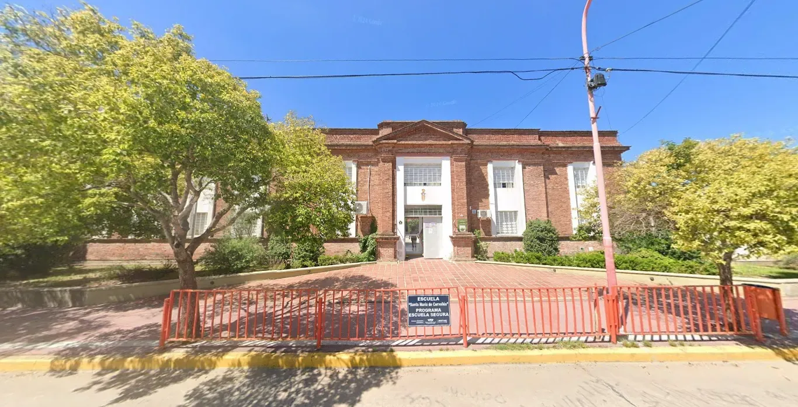
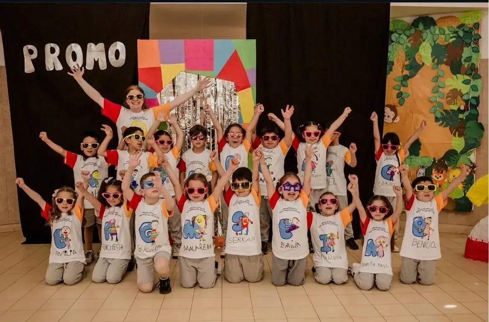
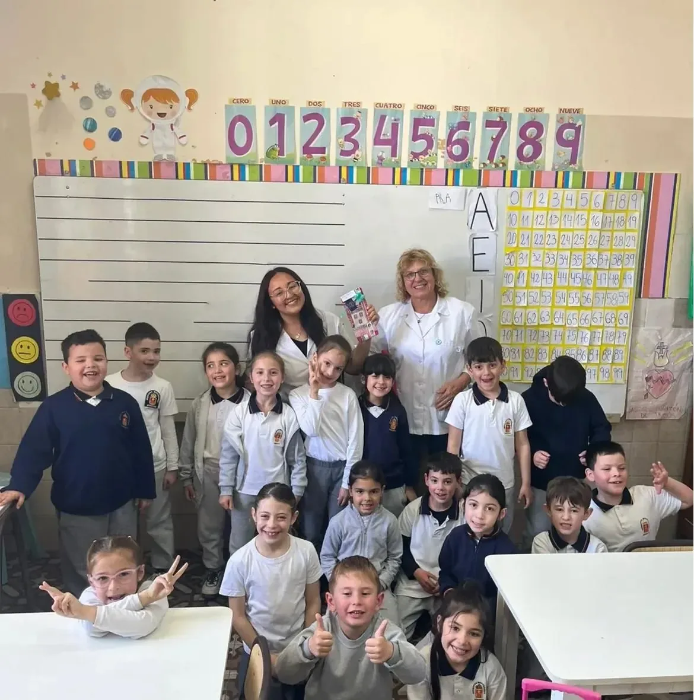
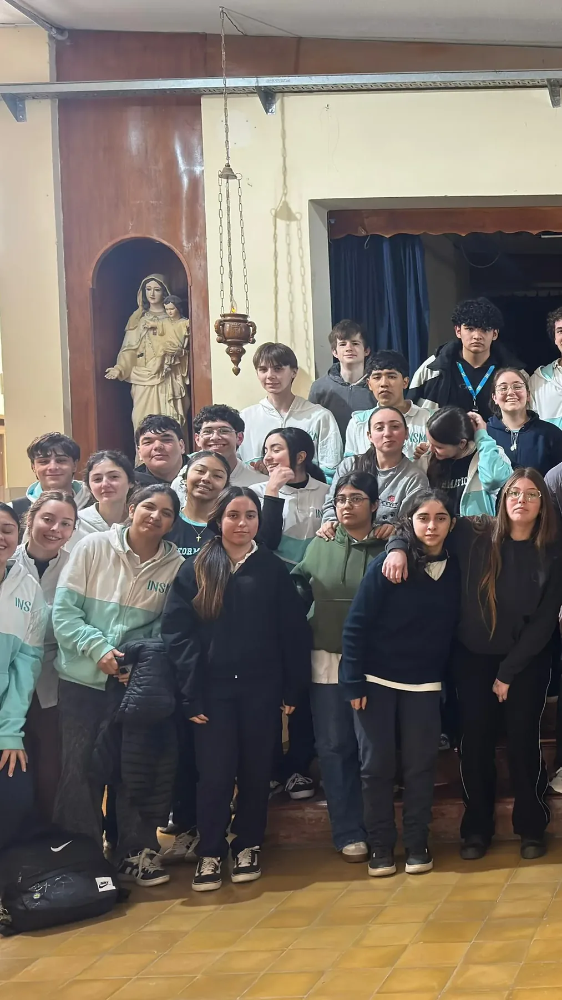
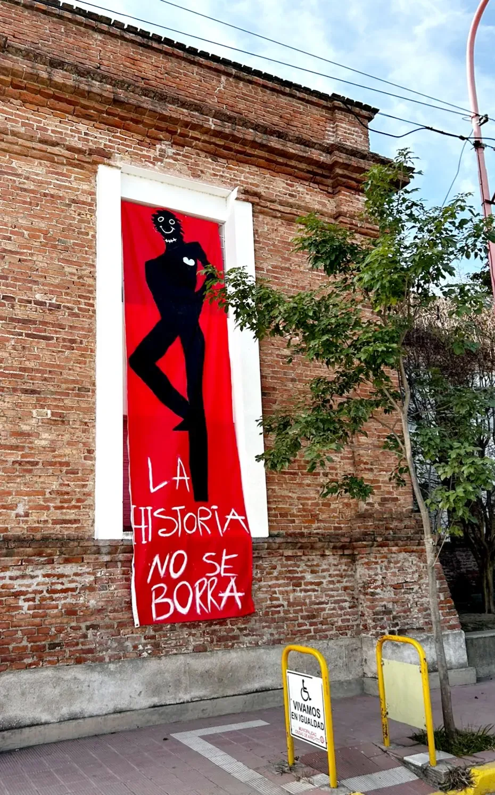

Explorá lo que hacen nuestros estudiantes.
Producciones, experiencias y propuestas que cruzan materias, creatividad y comunidad.
Descubrir
Una comunidad educativa que acompaña cada etapa, abre caminos y convierte el aprendizaje en experiencias que dejan huella.
El año en que comenzó una historia educativa que todavía se escribe con su comunidad.
Una institución se construye cuando las personas encuentran un lugar para aprender, participar y transformar.
Cada nivel tiene su propia identidad, propuestas y experiencias. Entrá directamente a la etapa que querés conocer.

Los primeros pasos: juego, vínculos, exploración y expresión.

Una base sólida para descubrir, preguntar, crear y compartir.

Orientaciones, proyectos y herramientas para construir el futuro.

Formación y desarrollo profesional dentro de una comunidad educativa.
Completá una solicitud o consulta de ingreso y elegí entre Inicial, Primario, Secundario o Terciario.
Solicitar información ↗
El Instituto Nuestra Señora de la Merced nace el 1º de octubre de 1887, fruto de la vocación del Padre José León Torres. Junto a diez religiosas, inició una misión educativa basada en la formación integral y en los valores mercedarios.
Con el paso del tiempo, la institución creció junto a Arroyito, incorporando nuevas propuestas, espacios y generaciones que hicieron de la comunidad parte esencial de su identidad.

Producciones, experiencias y propuestas que cruzan materias, creatividad y comunidad.
DescubrirLa vida institucional se construye en encuentros, proyectos, viajes, celebraciones, deportes, arte y cada momento que conecta a quienes forman parte del INSM.
Recorré virtualmente el establecimiento y descubrí sus espacios desde cualquier dispositivo.
Encontrá la información de contacto, ubicación y canales de comunicación de nuestra comunidad educativa.
Ir a contacto ↗